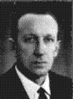
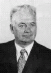
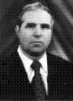

ВІД КОЛОМИЙСЬКОГО ТЕХНІЧНОГО УЧИЛИЩА № 4 – ДО ОТИНІЙСЬКОГО ПРОФЕСІЙНОГО ЛІЦЕЮ ЕНЕРГЕТИЧНИХ ТЕХНОЛОГІЙ
КРОКИ ІСТОРІЇ
Історія нашого навчального закладу тісно пов’язана з розвитком системи професійної підготовки робітничих кадрів України. Під час Великої Вітчизняної війни, в післявоєнний період проблема кваліфікованих робітничих кадрів загострилася. В середині 60-х років швидкими темпами зростає промисловість, розвиток міст та індустрії сприяв інтенсивному розвитку енергетичної галузі.

Стартовим документом для нашого навчального закладу стала Постанова Ради Міністрів СРСР за № 12-873 рс від 1.12.1954 року та наказ Чернівецького обласного управління «Трудові резерви» за № 486 від 29.12.1954 року. Так народилося дитя професійно-технічної освіти Технічне училище № 4, хрещеним батьком якого стало Станіславське обласне управління сільського господарства.

Петро Михайлович
- електромеханіки сільської електрифікації;
- радіомеханіки;
- механіки автомобільного транспорту;
- Келектрослюсарі.
Навчальний процес проходив у пристосованих приміщеннях загальною площею 2000 м.кв, кількість учнів була 170 чол., очолював навчальний заклад – Тереножкін Петро Михайлович.
Базою професійної підготовки стають промислові підприємства м. Коломиї. На основі наказу Чернівецького міжобласного управління професійної освіти навчальний заклад переводять в смт. Отинію. Еволюція професійно-технічного училища продовжується. Контингент учнів зростає до 240 чол., частково змінюється профіль підготовки спеціалістів, формується новий стабільний колектив педагогічних кадрів. У штаті працівників училища, крім директора, були заступник директора з навчально-виховної роботи, заступник директора з навчально-виробничої роботи, старший майстер, завгосп, головний бухгалтер.
Йшли роки, видозмінювалась навчально-матеріальна база, змінювались професії і спеціальності, за якими готувалися фахівці. Не один раз училище змінювало назву:
- 1963 р. - технічне училище № 4 перейменовано у МПТУ № 9;
- 1966 р. - МПТУ № 9 перейменовано у МПТУ № 13;
- 1969 р. - ПМТУ №13 перейменовано у ПТУ №3;
- 1974 р. - ПТУ №3 перейменовано в ПТУ № 33.

Богдан Михайлович
Основним завданням педагогічного колективу на той час було розширення відповідної матеріально-технічної бази для підготовки кваліфікованих робітників, вдосконалення форм та методів навчання.
Кінець 60-х років приніс зміни в керівництві навчальним закладом. З 3 лютого 1968 року у зв’язку з виходом на пенсію директора Тереножкіна П.М. призначено директором Ступарика Богдана Михайловича.
Але через 1.5 року доля розпорядилась бути йому директором МПТУ м.Івано-Франківська
В 1970 році навчальний заклад очолив Петровський Михайло Йосипович.

Михайло Йосипович
Разом з ним активно працюють: заступник директора з навчально-виробничої роботи Мороз Микола Модестович, заступники директора з навчальної роботи Гасюк Михайло Миколайович, Панахида Ольга Степанівна, заступник директора з виховної роботи Тацюк Петро Іванович, старші майстри Борисевич Ярослав Іванович, Бойчук Володимир Миколайович, завгосп Лесів Іван Миколайович, головний бухгалтер Ковалів Надія Петрівна.
Нове базове підприємство Трест "Укрспецводмонтаж" м.Запоріжжя, новий керівник навчального закладу, молодість колективу, розумний підхід до вирішення проблем, допомога начальника Івано-Франківського обласного управління професійної освіти Стояна Миколи Григоровича дають життя новому навчальному корпусу з проектною потужністю 420 учнівських місць. Споруда чотирьохповерхова, загальною площею 6600 кв.м.. У цьому корпусі ми навчаємося і зараз. Пізніше зводять гуртожиток на 360 місць. Приміщення п’ятиповерхове, в якому є 144 кімнати з розміщенням по 2-3 чоловіки.
І знову втретє педагогічному колективу чисельністю 32 чол. та учнівському колективу в кількості 400 чол. прийшлось вступити в боротьбу за створення нових навчальних кабінетів, лабораторій, майстерень. Колектив переміг, але час і науково-технічний прогрес вносять свої корективи, і нам на марші приходиться перебудовуватися.
В 1994 році Петровський М.Й. вийшов на заслужений відпочинок. Керівником училища стає Іванків Петро Степанович.
З ІСТОРІЇ РОЗВИТКУ ХУДОЖНЬОЇ САМОДІЯЛЬНОСТІ В ОТИНІЙСЬКОМУ ПЛЕТ
1. Хорові колективи
В Отинійському технічному училищі (так воно тоді називалось) учнівський змішаний хор був заснований в 1965 році і нараховував в своєму складі 26 учнів.
В 1974 році, коли училище реформувалось в СПТУ № 33, склад хору збільшився до 70 учасників. Із-за відсутності дівчат він був чоловічим однорідним хором. В 1992 році з введенням нових професій («Кухар», «Кухар; кондитер») структура хору змінилася - він став змішаним. В 1990 році в ліцеї крім учнівського був створений хор працівників (спочатку чоловічий, потім змішаний). Існував цей хор 4 роки. З 2008 року і до цього часу в ліцеї є два хори: змішаний та жіночий.
Засновником хорового співу в училищі був Лиско Богдан Петрович (нині покійний), який керував хором з 1965 року по 1972 рік, В наступні роки керівниками хору були:
- 1972-1982 роки - Марцінків Мирослав Іванович
- 1982-1983 роки - Мачошак Дмитро Михайлович
- 1983-1989 роки - Цібій Петро Омелянович
- 1989-1992 роки - Глухий Дмитро Миколайович
- 1992-1993 роки - Павлюк Федір Михайлович
- 1993-1994 роки - Тацюк Петро Іванович
- 1994-2002 роки - Хашко Леся Петрівна
- 2002-2006 роки - Тацюк Петро Іванович
- 2006-2008 роки - Грипів Ярослав Мирославович
- 2008-2011 роки - Тацюк Петро Іванович
- 2011-2013 роки - Новіцька Вікторія Миколаївна
В репертуарі хорів були пісні композиторів-класиків, духовний снів, українські народні пісні та пісні українських композиторів, зокрема:
1. Пісні (або обробки українських пісень) композиторів-класиків:
- М.Лисенко: «Боже великий, єдиний», «Пливе човен». «Гей, не дивуйтесь, добрії люди»;
- М.Леонтович: «Тиха вода», «Мала мати одну дочку», «Закувала зозуленька», «Праля», «Щедрик», «Дударик», «Ой послала мене маги», «Налетіли журавлі», «Над річкою бережком», «Ой у полі жито», «За річкою, за Дунаєм», «Ой гук, мати, гук»;
- М.Колесса: «Сива зозуленька;
- О.Верстовський: хор дівчат з опери «Аскольдова могила»;
- П.Ніщинський: «Закувала та сива зозуля»;
- М.Смеречанська: «Тече вода в синє море»;
- М.Вериківський: «Зашуміла ліщинонька».
2. Пісні релігійного змісту (фрагменти літургії): «Отче наш», «Херувимська», «Алилуя», «Щоб і царя», «Отця і сина», «О, Всепітая Царице», «Царю небесний», «Слава Єдинородному Сину», «Просимо тя, Діво».
3. Пісні українських авторів: «Білі каштани», «А зозуля кує», «Над Прутом», «Маєва нічка», «Коні», «За рідний край», «Засумуй, трембіто», «Місячна ніч», «Йде січове військо», «Сусідко», «Ішов козак потайком», «Ой видно село», «Бо війна війною», «Там на горі, на маківці» та ін.
4. Українські народні пісні: «Віє вітер», «Спать мені не хочеться», «Бандуристе, орле сизий», «Копав, копав криниченьку», «Молитва», «За Україну», «Лунає дзвін», «Вечір надворі», «Їхав козак містом», «Ой у полі нивка», «Ой на горі», «Ой у полі верба», «Ой літає соколонько», «Гей, не дивуйте, добрії люди», «Марш українських дітей», «Ревуть, стогнуть гори-хвилі». «Гей, наповним, браття», «Віє вітер, віє буйний», «Вийшли в поле косарі», «Ой, що то за шум», «Ой видно село», «Поза лугом зелененьким» та ін.
Керівник Лиско Б.П.
Керівник Марцінків Мирослав Іванович
Керівник Марцінків Мирослав Іванович
Керівник Цібій Петро Омелянович
Керівник Цібій Петро Омелянович
Керівник Глухий Дмитро Миколайович
Керівник Тацюк Петро Іванович
Керівник Хашко Леся Петрівна
2. Вокально-інструментальний ансамбль
Ініціатором створення колективу і його беззмінним керівником 1972-1983 років був Марцінків Мирослав Іванович. В ансамблі брали участь учні та працівники училища. В ньому нараховувалось 8 оркестрантів та 6 вокалістів.
В короткий час ансамбль здобув популярність в нашій області та за її межами. На щорічних обласних оглядах ансамбль постійно завойовував перші місця. Неодноразово виступав і на республіканській сцені в Києві, Львові, Миколаєві та інших містах. Брав участь у телезйомках «Неспокійні серця» в м. Яремча. Нагороджений численними грамотами та дипломами.